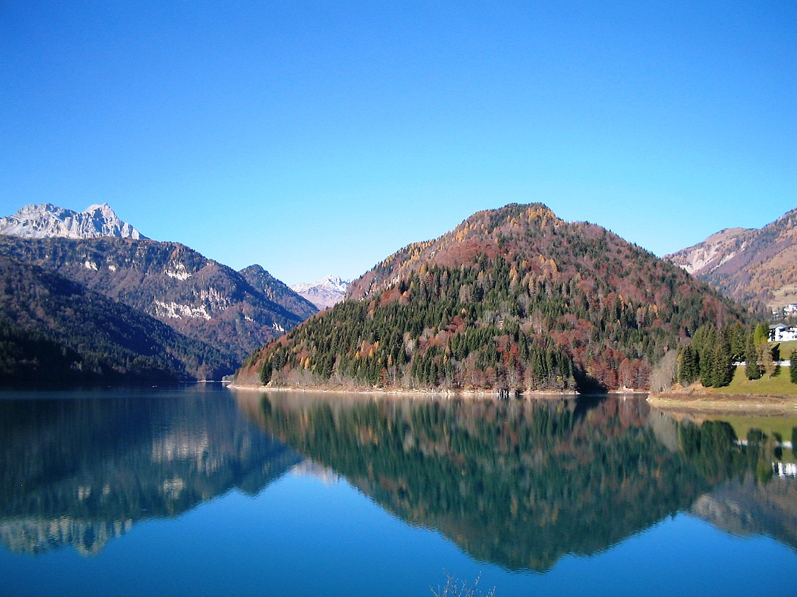
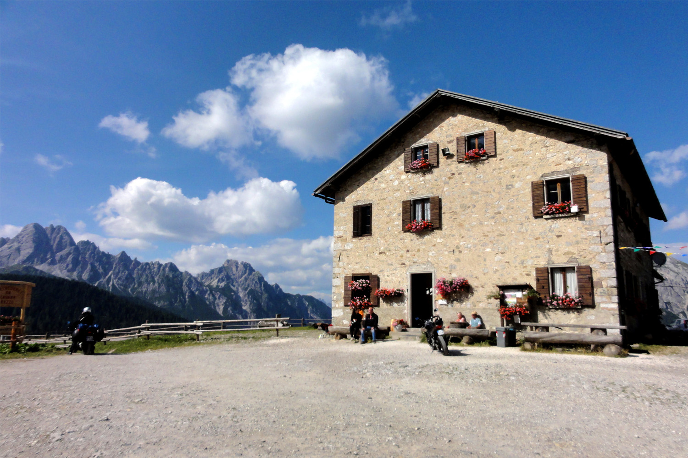

Ebbene sì, questa volta la salita si fa in macchina…
Normalmente, durante l'inverno la strada asfaltata vicino alla Casera Razzo viene battuta diventando una pista sulla
neve, utilizzata da persone a piedi, con gli sci, motoslitte, ciaspe. Qualcuno ci prova con la jeep e qualcun altro
con la mountain bike. Il percorso (tracciato per navigatore) sulla Sella di Razzo non è stato segnato: cambia a
seconda di come è stato battuto, oltre al fatto che può essere fatto a preferenze personali. La parte del percorso
in prossimità della Sella di Razzo è, approssimativamente, in piano. Si presentano piccole salite e discese che
compongono, in totale, un anello a Sud (verso il paese di Sauris), limitato a Nord dall'asfalto, pulito dalla neve,
della strada fra la Val Pesarina e il Cadore. Inizia quindi la discesa verso Sauris di Sopra dove la pendenza è
elevata, soprattutto in relativo, immaginando di correre sulla neve e le capacità di frenata associata.

La strada è caratterizzata da lunghi rettilinei seguiti da tornanti. In aggiunta nulla escude la presenza di lastre
di ghiaccio, ad esempio formate dallo scoglimento della neve durante il giorno e il suo congelamento nella notte. È
possibile scegliere se effettuare il passaggio da Sauris di Sopra a Sauris di Sotto su asfalto o su sentiero, il
primo caso è quello riportano nel percorso, il secondo richiede il passaggio precedente di qualcuno sul sentiero, in
modo che questo sia battuto, altrimenti sarebbe impossibile da percorrere. Sauris di Sotto è sede d'inizio di un
altro percorso, un misto con indimenticabili salite: Sauris di Sotto - Sella Festons - Forcella Pièltinis, oltre
all'inizio della serie di tornanti che porta al Lago di Sauris, al di sotto della frazione di Lateis, luogo di un
altro percorso invernale, un "due giorni" in questo caso, Lateis - Monte Forchia. L’itinerario per navigatore mostra
la strada che dalla Sella di Razzo porta fino al paese di Villa Santina, 1400 m di discesa. La strada è
completamente asfaltata, d’inverno però il tratto da Sauris di Sopra alla Sella di Razzo non viene pulito dalla
neve, per cui è molto interessante farlo in bici. Lunghezza 39 km, dislivello 1450 m ma di sola discesa.
